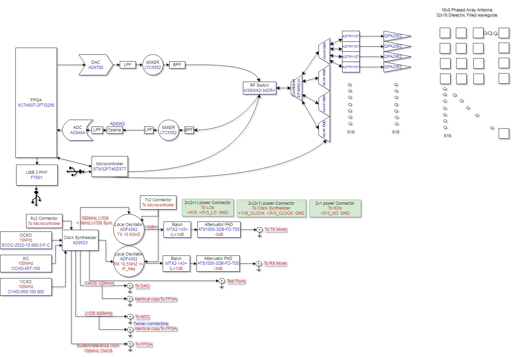

System View
Architecture and Data Path
Hardware and firmware structure for the current XC7A200T implementation and bring-up targets.
Top-level processing flow
| Stage |
Module Focus |
Notes |
| ADC capture |
AD9484 interface + CDC edge |
400 MHz sampling domain, synchronized into processing pipeline. |
| DDC |
NCO + CIC + FIR |
I/Q conversion and decimation for baseband-ready stream. |
| Matched filter |
FFT-based chain |
Synthesis branch is golden for hardware-equivalent co-sim. |
| Range/Doppler |
Range bin decimator + Doppler FFT |
32 chirps/frame, 64 range bins, deterministic frame outputs. |
| Host path |
FT601 interface |
USB streaming with framing and soak validation in bring-up. |
Current target split strategy
- Production target remains
xc7a200t-2fbg484i with full board constraints.
- TE0712/TE0701 and TE0713/TE0701 use dedicated top wrappers and dedicated XDC files.
- Board-specific pinouts are isolated from core DSP modules to avoid accidental cross-target regression.
- Bring-up sequence starts from minimal heartbeat top, then steps into full signal chain validation.
Reference block diagram

Diagram snapshot from AERIS-10 project architecture.